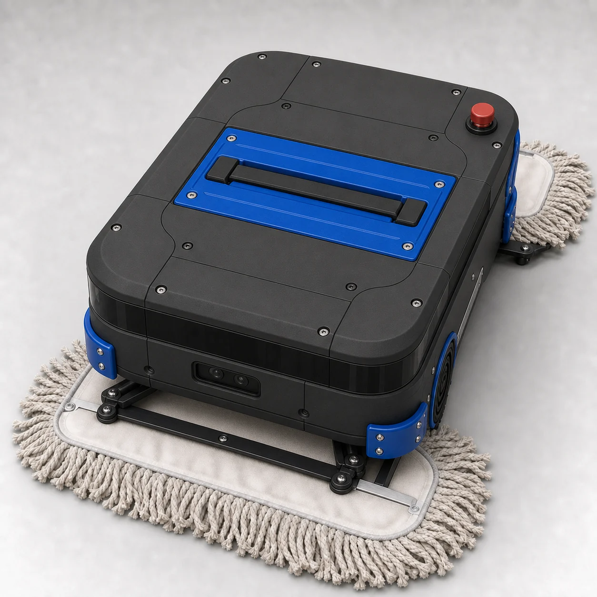
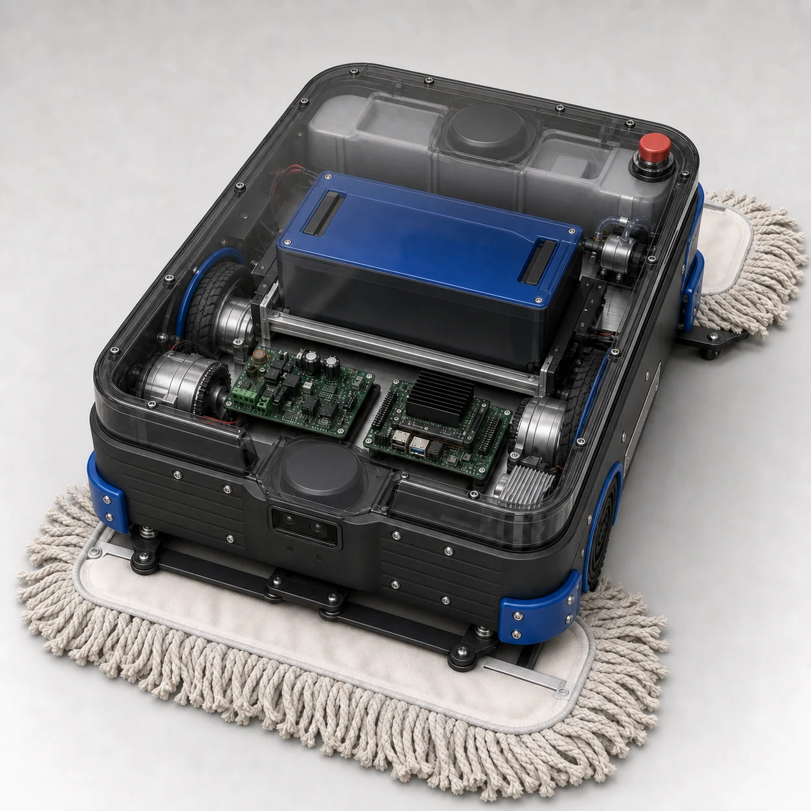

§0 · La propuesta en breve
Lo que entregaremos
Un producto de limpieza completo — no un prototipo — entregado con la evidencia de pruebas que respalda cada afirmación de este documento.
Proponemos entregar, en 16 semanas, una unidad RoboMop New Era completamente integrada: el robot, un acumulador LFP con cargador compatible, irrigación integrada, software de autonomía y misión, la app de flota y un gemelo digital con escenarios de prueba reproducibles. Junto con el hardware, usted recibe el paquete técnico completo — CAD, lista de materiales, código fuente, firmware, registros de calibración, manuales de operación y un informe final con recomendaciones concretas para una fase posterior de hasta diez unidades.
El precio total es MXN $54,162.53: una estimación base de MXN $47,097.85 más una contingencia del 15% que permanece bajo su control y solo se gasta en riesgos que realmente se materialicen. Un techo firme de MXN $55,000 nunca se cruza sin su aprobación explícita, y cada peso se rastrea semanalmente contra él.

La entrega se guía por hitos: usted aprueba los requisitos en la Semana 1, el diseño en la Semana 2, y ve al robot pasar su prueba final de aceptación — presenciada, contra una matriz de pruebas que congelamos juntos al inicio — en la Semana 16.
§1 · Por qué este robot es mejor
Qué cambió respecto al prototipo de 2025
No parchamos el robot anterior. Lo reconstruimos para que lo que solía fallar ahora sea físicamente imposible — y cada mejora es algo que usted puede probar.
El prototipo de 2025 demostró el concepto: el trapeado autónomo funciona. También nos enseñó exactamente dónde se rompe un robot de limpieza cuando enfrenta pisos reales, horarios reales y cargas eléctricas reales. RoboMop New Era conserva todo lo que funcionó y rediseña todo lo que no. El resultado, característica por característica:
§2 · Lista de materiales
De qué está hecho el robot — y cuánto cuesta
Seis partes exactas ya están fijadas con precios; todo lo demás es un grupo presupuestal honestamente etiquetado, congelado a números de parte en la revisión de diseño de la Semana 2.
La lista de materiales a continuación es la lista de compras completa detrás del precio — cada línea en pesos mexicanos. Las partes definidas son números de parte exactos que hemos seleccionado y cotizado: la computadora Jetson, el controlador ESP32, los dos motorreductores de 100 watts, las dieciséis celdas LFP y los dos escáneres RPLIDAR S2. Los grupos presupuestados llevan un presupuesto firme en MXN — tarjetas, cámaras, irrigación, chasis, seguridad — congelados a números de parte exactos cuando usted apruebe el diseño en la Semana 2. Alrededor de las partes, la arquitectura las une: un enlace serial verificado con CRC y con sello de tiempo entre las dos computadoras, para que un comando corrupto nunca pueda llegar a los motores, y un bus CAN estilo automotriz ya instalado para accesorios que agreguemos después.
Tres inversiones cargan el presupuesto — el acumulador, la plataforma de cómputo y la nueva suite de sensores — porque esas son las tres cosas que hacen a este robot diferente del anterior. Nada crítico se ordena sin número de parte, tiempo de entrega y costo puesto en destino confirmados, y aproximadamente el 84% de la base se compromete en las primeras dos semanas para que los artículos de entrega larga nunca amenacen el calendario.
§3 · Cómo funciona
Cómo está organizado el robot
Un cerebro piensa, un cerebro conduce — y el que conduce responde al hardware, no al humor de la otra computadora.
El cerebro pensante maneja mapas, rutas, cámaras y la app. El cerebro conductor opera los motores mil veces por segundo y marca temporalmente cada sensor contra un solo reloj, para que el mapa que construye el robot nunca se desvíe. Si el cerebro pensante llegara a colgarse, el cerebro conductor detiene los motores por sí mismo — el paro está cableado en silicio, y ningún error de software puede anularlo. La entrega de agua, el cambio de batería y la cadena de paro de emergencia responden al mismo controlador supervisado, y un bus CAN estilo automotriz ya está instalado para accesorios que agreguemos después.

§4 · Batería y autonomía
Batería y autonomía
La batería se dimensiona con un modelo energético construido a partir de consumos medidos — no con optimismo. La estimación supera la barra de aceptación con margen de sobra.
El paquete LFP tiene una capacidad nominal de 1.024 kWh (25.6 V · 40 Ah); el modelo de autonomía reserva 960 Wh para la operación. Se dimensiona contra todo lo que realmente consume: las computadoras, la tracción y el cabezal de limpieza. Con un consumo promedio sostenido de 200 W, la carga de trabajo de peor caso para la prueba, el paquete entrega unas 4.8 horas estimadas de limpieza y supera la barra de aceptación de ≥4.0 horas con un margen del 20%. Una batería cargada sustituye la agotada en menos de cinco minutos mientras los controles permanecen despiertos. Con un repuesto cargado en el estante, la estimación llega a 9.6 horas, más allá de un turno completo de ocho horas, sin reiniciar ni remapear. La química LFP ofrece una opción segura y de larga vida útil, con su propio sistema de gestión de batería.
§5 · El plan de 16 semanas
El calendario de 16 semanas
Los requisitos se congelan en la Semana 1, el diseño en la Semana 2, las funciones en la Semana 12 — y cada viernes usted ve una demostración, no una diapositiva.
El plan corre requisitos → diseño → ingeniería concurrente → construcción de subsistemas → integración → verificación → aceptación. Cada una de las siete compuertas tiene un criterio escrito y su firma: nada avanza a base de promesas. Si algo en la ruta crítica se retrasa más de tres días hábiles, usted recibe un plan de recuperación de inmediato — y dos semanas consecutivas perdidas disparan una revisión de alcance o recursos con usted, no un desliz silencioso.
§6 · Riesgos y respuestas
Principales riesgos y respuestas
El registro de riesgos es explícito: cada riesgo tiene un disparador objetivo y una respuesta de ingeniería. Ambos se revisan semanalmente con usted.
Las dos amenazas principales son las habituales en un proyecto de hardware ambicioso: un calendario exigente y un equipo compacto. Se gestionan con puntos de decisión congelados, líneas de trabajo en paralelo y una reserva de retrabajo del 20%. Además, cada riesgo técnico, desde tarjetas tardías hasta datos de batería o agua cerca de la electrónica, tiene una respuesta de ingeniería definida. Una regla está por encima de todas: un solo evento de movimiento no controlado detiene todo el trabajo hasta comprender su causa.
§7 · Cómo sabrá que funciona
Pruebas y aceptación
La matriz de pruebas se acuerda y se congela con usted en la Semana 1, antes de que exista cualquier resultado, para que la Semana 16 demuestre el cumplimiento de criterios acordados.
Cada capacidad de esta propuesta corresponde a un compromiso numerado y a un criterio de éxito documentado. Las pruebas avanzan en cinco niveles: simulación de software, bancos de prueba, subsistemas individuales, robot integrado y, por último, una corrida de aceptación presenciada contra la matriz congelada. La simulación apoya el desarrollo, pero nunca sustituye las pruebas físicas de autonomía, temperatura, conectores, cambio de batería, frenado, fugas o seguridad eléctrica.
Qué significa «aceptado» el día de la entrega
- Al menos 4 horas de limpieza continua desde carga completa, bajo el perfil de trabajo acordado de 200 W, sin disparos de batería, sobrecalentamiento ni reinicios.
- Cambio de batería en cinco minutos o menos, con los controles del robot activos en todo momento y conectores fríos y firmes.
- Cero defectos críticos abiertos y ningún defecto mayor abierto sin su aprobación por escrito.
- Se ejecuta y firma la matriz completa de autonomía, percepción, irrigación y conectividad; además, se entregan el robot, el acumulador, el cargador, el software y el paquete técnico completo.
Si más adelante decide fabricar más unidades, cada ensamble crítico contará con número de parte, revisión, número de serie, calibración y registro de aprobación o rechazo. Así, las pruebas ejecutadas en esta unidad se convierten en controles de producción para una fase posterior de hasta diez unidades.
§8 · Quién hace qué, y cómo nos mantenemos en ruta
Equipo y control del proyecto
Planificación del sprint cada lunes, una reunión diaria breve, una revisión técnica a mitad de semana y una demostración con informe de estado por escrito cada viernes.
Lo que definimos y congelamos juntos en las primeras dos semanas
Lo que esta propuesta no incluye
La seguridad primero, siempre. Ante cualquier condición insegura, ambos ingenieros del equipo pueden detener de inmediato cualquier prueba: movimiento no controlado, anomalía de batería, conector caliente, riesgo eléctrico, fuga de agua u otra condición insegura.
Todo cambio queda documentado. Cualquier cambio de diseño después de la Semana 2 y cualquier función nueva después de la Semana 12 quedan sujetos a su aprobación.
Los números que reportamos cada semana
Aprobación
Firmar aprueba el plan de 16 semanas, el presupuesto base de MXN $47,097.85, el precio total de MXN $54,162.53 y el techo de MXN $55,000, bajo las reglas de compras, control de cambios y compuertas descritas arriba.
| Rol | Nombre | Decisión | Fecha / firma |
|---|---|---|---|
| Patrocinador | Luis Vazquez | Aprobar / Rechazar | |
| Gerente de Proyecto | Germán Velázquez | Aceptar la responsabilidad | |
| Lead Robotics & Systems Engineer | Sebastian Barrio | Refrendar la base técnica y de pruebas |